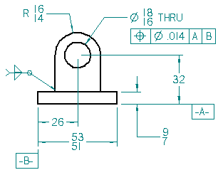

Editing 2D drawing views
There are several ways you can edit a 2D drawing view.
-
When you need to edit 3D model graphics in a 2D drawing view, double-click the view. You can also use the Draw in View command on the shortcut menu.
-
If the 2D view graphics were created from the 2D Model sheet as a block, or dragged onto the sheet as a file, then you can use the Open command on the shortcut menu to open the graphics for editing. Or you can use the Unblock command to drop the block to its base elements for individual manipulation.
-
If you created the 2D view associatively using the Maintain Relationships command, you can edit the driving dimensions to modify the graphics. When you close the 2D view, the driven dimensions you placed on the sheet will update.
